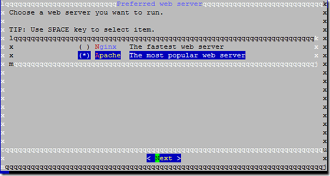
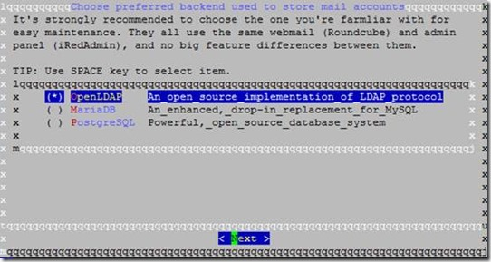

Linux搭建小型服务器——文件共享以及邮件服务器
因为公司搬家，之前后又采用了新的服务器，所以之前的服务器的东西需要移动到新的服务器上，而且趁着这次机会，搭建了一个局域网使用的邮件服务器使用，虽然不知道别人怎么搭建的，但是把自己的经验记录下来，因为这个邮件服务器确实花了我不少时间去琢磨，因为它这玩意可能还会干扰我的文件共享功能。
邮件服务器是IRedMail，文件共享服务是Samba，环境是centos。
IRedMail安装：
网上搜索很容易搜索到使用Postfix+Dovecot搭建邮件服务器，不过我没有搭建成功，很遗憾，所以我找到了使用IRedMail去搭建这个服务器，比之前的操作简单多了。
搭建的步骤主要是参考了这个：How to Install iRedMail on CentOS 7 for Samba4 AD Integration – Part 10
首先你得有一个centos的系统，这里选择的是centos 7最小化安装，非常快速简洁的便会安装完成。
-
进入系统，准备设置系统主机名。
1
# hostnamectl set-hostname mail.demo.com
-
主机名在hosts中设置一下，设置这个东西主要是IRedMail在安装时会需要使用到，所以自定义一下。vim /etc/hosts。
1 | 127.0.0.1 mail.demo.com mail localhost localhost.localdomain |
先后格式错误的话，IRedMail在安装时也会提醒安装错误的。
- 在我参考的那个英文文章里说，需要关闭selinux，我试了下，不关闭也是照样好使的，不过别人的说的是推荐，不是强制。vim /etc/selinux/config。
1 | SELINUX=disabled |
- 接下来需要安装些必要的Linux工具了，使用yum命令。
1 | # yum install bzip2 net-tools bash-completion wget |
- 获取IRedMail的安装包，并解压。
1 | # wget https://bitbucket.org/zhb/iredmail/downloads/iRedMail-0.9.6.tar.bz2 |
- 接下来就可以运行IRedMail里面的脚本了，并不需要认为设置，很是方便。
1 | # IREDMAIL_MIRROR='http://106.187.51.47' bash iRedMail.sh |
如果你直接运行bash iRedMail.sh，是没啥结果的，查了下，好像是因为其下载地址被强了吧，所以需要加入前面的环境设置。
- 安装过程基本上选择默认，除了在选择web server上选择Apache，后端选择OpenLDAP外（我之前选择了MariaDB，Samba就死活通不了了，OpenLDAP我实验成功），其他基本上是默认的。


-
在需要输入些什么时候稍微看下软件给的提示英文，设置起来应该是没什么问题的。
-
设置完后，就是开始安装了，保证系统可以上网即可，安装完成后，软件将提示重启所有服务，
-
在软件目录的下的iRedMail.tips，其保存了很多服务器设置的内容，包括邮件服务器里面的管理员密码，所以，需要保管好。iRedMail-0.9.6/iRedMail.tips
-
在同一局域网的浏览器上，输入https://192.168.0.254，此处的IP是服务器IP，这样即可连接到邮件服务器了，注意：浏览器可能静止访问，或者兼容模式访问起来有些问题，这个时候需要测试者多整整浏览器的问题，以免误认为安装失败。
httpS://192.168.0.254/mail/ 邮箱登录
httpS://192.168.0.254/iredadmin/ 管理邮箱账户，添加邮箱
Samba安装
这个Samba我主要是参考了：http://www.cnblogs.com/linuxprobe/p/5658735.html
步骤1：在Fedora和CentOS上安装Samba
首先，安装Samba以及进行一些基本的配置。
检验Samba是否已经安装在您的系统中：
1 | $ rpm -q samba samba-common samba-client |
如果上面的命令没有任何输出，这意味着Samba并未安装。这时，应使用下面的命令来安装Samba。
1 | $ sudo yum install samba samba-common samba-client |
接下来，创建一个用于在网络中共享的本地文件夹。这个文件夹应该以Samba共享的方式导出到远程的用户。在这个指南中，我们会在顶层文件夹’/'中创建这个文件夹，因此，请确保您有相应的权限。
1 | $ sudo mkdir /shared |
如果您想在您的home文件夹内创建共享文件夹（例如，~/shared），您必须激活SELinux中Samba的home文件夹共享选项，具体将在后面提到。
在创建/shared文件夹后，设置文件夹权限以保证其余用户可以访问它。
1 | $ sudo chmod o+rw /shared |
如果您不想其他用户对该文件夹拥有写权限，您需要移除命令中的’w’选项。
1 | $ sudo chmod o+r /shared |
接下来，创建一个空文件来测试。这个文件可以被用来验证Samba的共享已经被挂载。
1 | $ sudo touch /shared/file1 |
步骤2：为Samba配置防火墙
下面的命令用来打开防火墙中Samba共享所需的TCP/UDP端口。
如果您在使用firewalld（例如，在Fedora和CentOS7下），接下来的命令将会永久的修改Samba相关的防火墙规则。
步骤3：更改Samba配置
后面的步骤用来配置Samba以将本地文件夹导出为Samba共享文件夹。
使用文件编辑器打开Samba配置文件，并将下面的行添加到文件的末尾。
1 | $ sudo nano /etc/samba/smb.conf |
上面在括号内的文本（例如，“myshare”）是Samba共享的资源的名字，它被用来从远程主机存取Samba共享。
创建Samba用户账户，这是挂载和导出Samba文件系统所必须的。我们可以使用smbpasswd工具来创建一个Samba用户。注意，Samba用户帐户必须是已有的Linux用户。如果您尝试使用smbpasswd添加一个不存在的用户，它会返回一个错误的消息。
如果您不想使用任何已存在的Linux用户作为Samba用户，您可以在您的系统中创建一个新的用户。为安全起见，设置新用户的登录脚本为/sbin/nologin，并且不创建该用户的home文件夹。
在这个例子中，我们创建了一个名叫"sambaguest"的用户，如下：
1 | $ sudo useradd -M -s /sbin/nologin sambaguest |
在创建一个新用户后，使用smbpasswd命令添加Samba用户。当这个命令询问一个密码时，您可以键入一个与其用户密码不同的密码。
1 | $ sudo smbpasswd -a sambaguest |
激活Samba服务，并检测Samba服务是否在运行。
1 | $ sudo systemctl enable smb.service |
使用下面的命令来查看Samba中共享的文件夹列表。
1 | $ smbclient -U sambaguest -L localhost |
Linux之间Samba远程挂载的命令：
1 | mount //192.168.1.58/demo /mnt/ -o username=samba |
附在末尾：
Linux关于权限：例如777，rwx(Owner) r-x(Group) r-x(Other)。
cat /etc/passwd 可以查看所有用户的列表
w 可以查看当前活跃的用户列表
cat /etc/group 查看用户组
1. 建工作组
1 | groupadd test //新建test工作组 |
2. 新建用户同时增加工作组
1 | useradd -g test one //新建one用户并增加到test工作组 |
3. 给已有的用户增加工作组
1 | usermod -G groupname username |
4. 将一个已有用户添加到一个已有的工作组中，可以使用带-a参数的指令。
1 | usermod -a -G groupname username |
5. 修改文件或目录所属的用户。
1 | chown one /home/one （把home目录下的one目录的有者改为one用户） |
6. 修改文件或目录所属的组。
1 | chgrp one /home/one （把home目录下的one目录的有者改为one组） |
本文标题：Linux搭建小型服务器——文件共享以及邮件服务器
文章作者：小师
发布时间：2017-10-29
最后更新：2022-05-04
原始链接：chunlife.top/2017/10/29/Linux搭建小型服务器——文件共享以及邮件服务器/
版权声明：本站所有文章均采用知识共享署名4.0国际许可协议进行许可